Friendpad keeps the little things in one cozy place: what you talked about, what to ask next time, birthdays and big moments. Every friend has a bond that grows when you meet and fades a little with time, so you know who to call next.
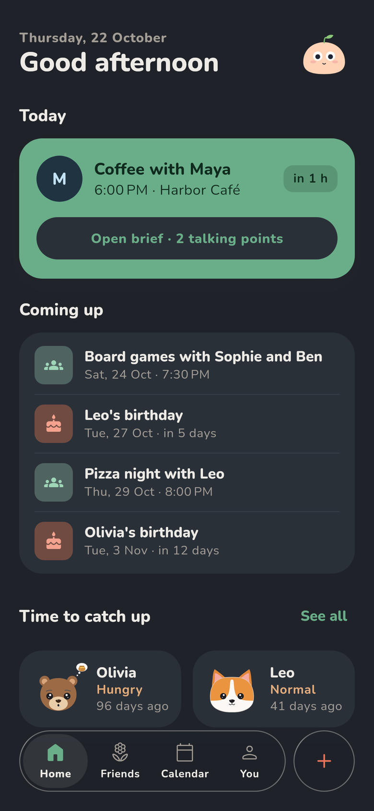
A quick tour of the main screens and where to find things.
Write down what matters while you still remember it. Everything about a friend sits on one scrolling page.
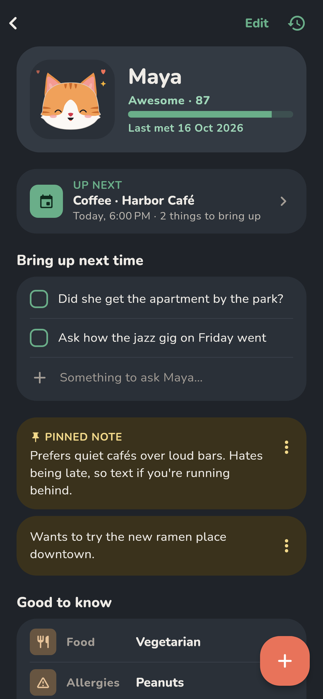
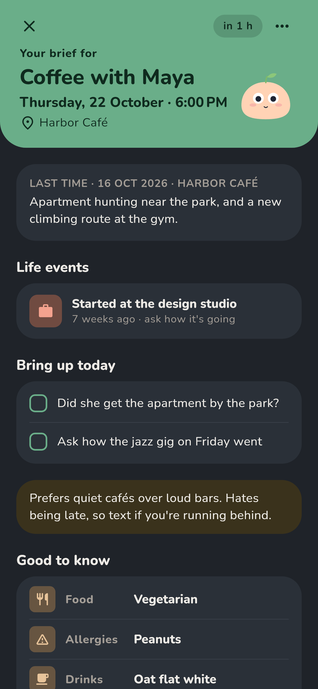
Plan a meetup and Friendpad prepares a short brief: what happened last time, recent life events and the things you wanted to bring up.
Each friend has a bond: a plant, a campfire, a cat, a dog, a cup of coffee and more. It thrives when you meet and slowly gets hungry or thirsty when you don't.
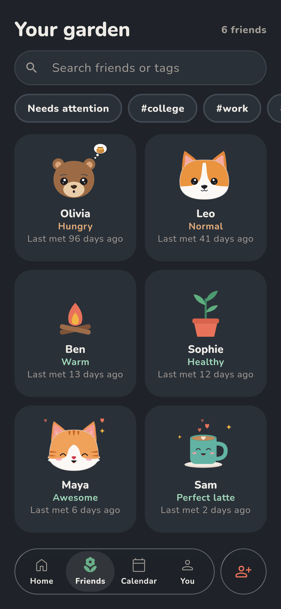
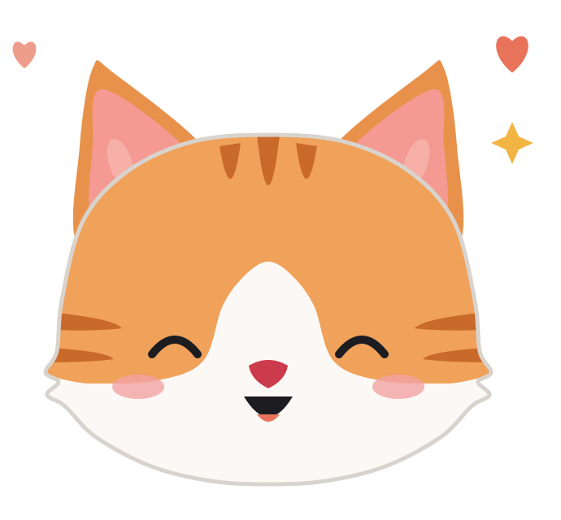
Awesome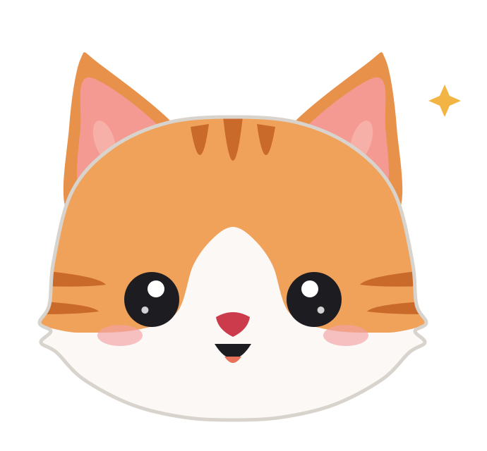
Feeling good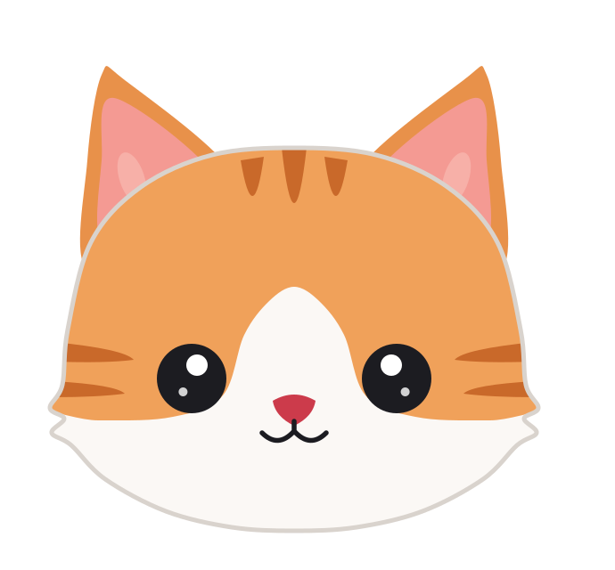
Normal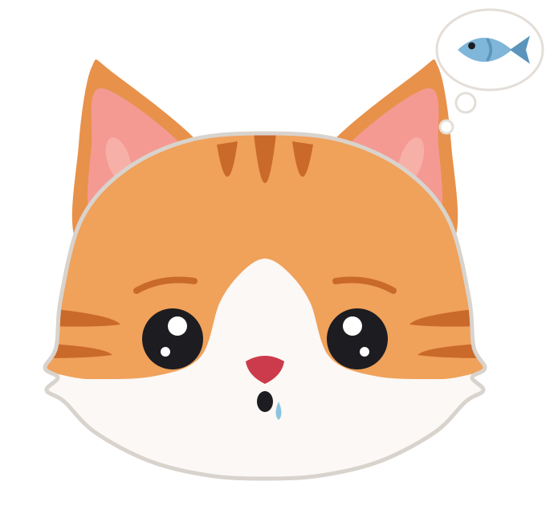
Hungry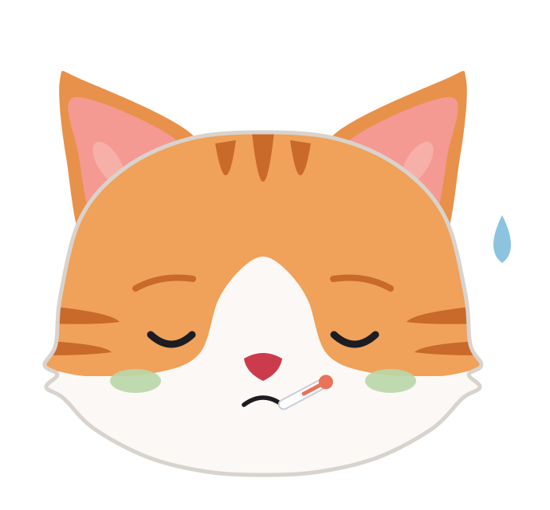
Sick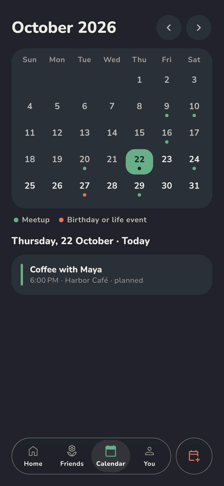
Meetups, birthdays and life events (a new job, a move, a wedding) all show up in the Calendar tab.
Mochi keeps you company from the first page. You can switch to another guide in the You tab, and change the app icon to match.
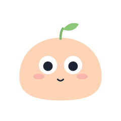
MochiPeach rice cake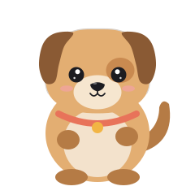
PatiGolden puppy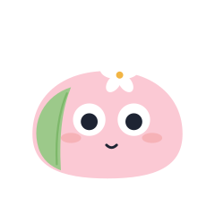
Sakura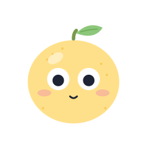
YuzuLight and dark, the way you like it.
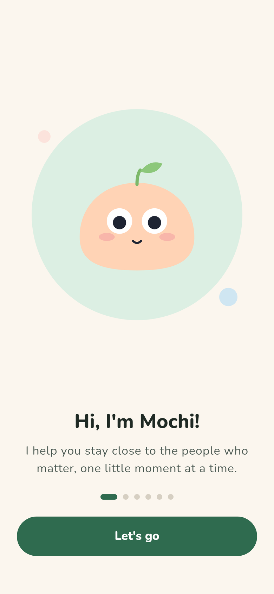
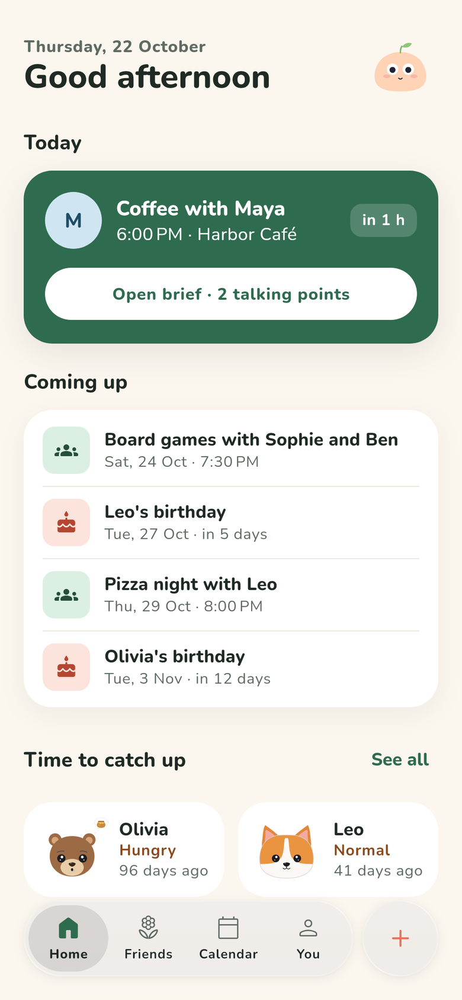
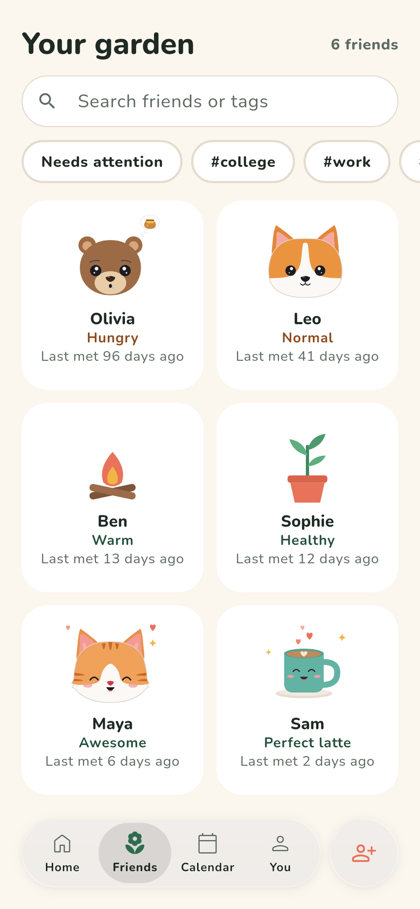
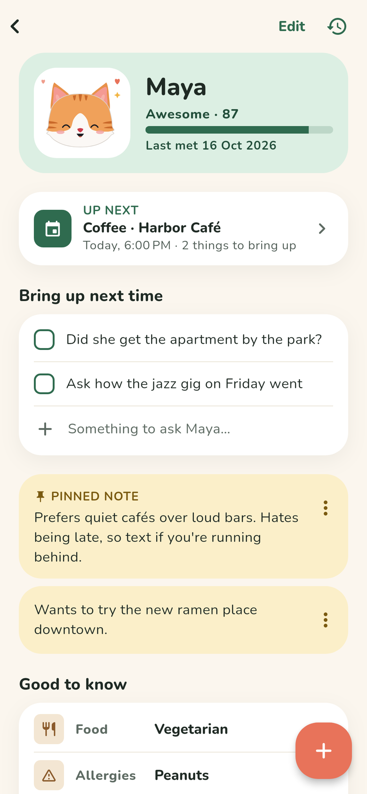
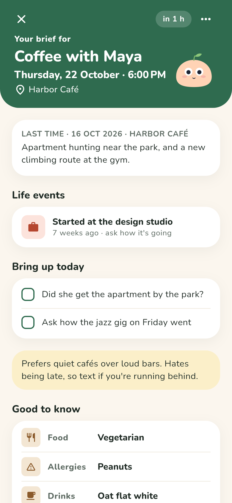
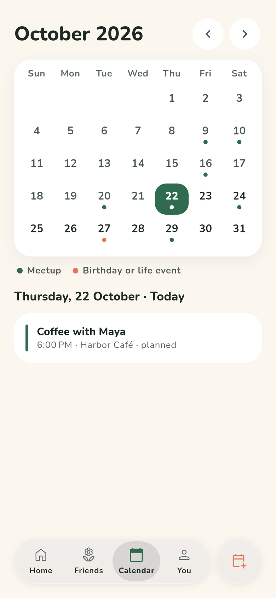
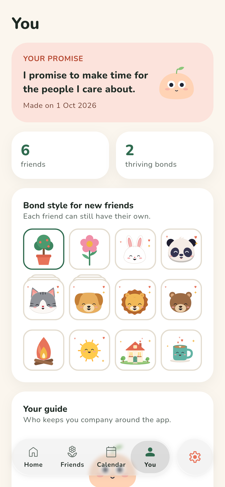
Answers to the things people ask most.
Open the Friends tab and tap the round add friend button next to the tab bar. Give them a name, pick a bond style and how often you'd like to meet.
Open a friend and tap Log a meetup, or tap their bond. On Home, the + button lets you log or plan one too. Plan one ahead with Plan one and you'll get a brief of past talks before you meet.
A bond is strongest right after you meet and slowly fades as time passes. How fast it fades depends on how often you'd like to see that friend (weekly, every two weeks, monthly, every few months or yearly).
A new friend starts at a healthy level on the day you add them. Logging a meetup fills the bond back up.
Yes. New friends get the style you picked in You, and you can change any friend's style when you edit them. Cats and dogs come in several colours and breeds.
Friendpad asks "Did it happen?" on Home and in the meetup's brief. Only meetups you confirm count toward the bond.
Go to You → the gear button → Notifications. Each kind of reminder (meetup briefs, "Did it happen?", birthdays, life events, fading bonds and the weekly digest) can be turned off on its own. For a birthday or life event, choose when to be reminded in that event's sheet.
Open Settings from the gear on the You tab and pick System, Light or Dark.
Pick a different guide in the You tab. If the app icon shows another mascot, You offers an Update app icon button so the icon can match.
Yes, Friendpad is made for both iPhone and Android. If you run into a problem on one of them, tell us your phone model and system version so we can help faster.
What you write about your friends is stored on your device. There's nothing to sign up for.
Friends, notes, meetups and birthdays are saved on your phone. Friendpad doesn't upload them, and you never enter a name, email or password.
Friendpad has no ads. It collects anonymous usage stats and crash reports to improve the app. They never include your notes or your friends' names.
Delete a friend to remove everything about them, or delete the app to remove all of it. To have your anonymous usage data deleted too, email us.
Read the full Privacy Policy and Terms & Conditions.
Questions, ideas or a bug? Write to us. For a bug, please include your phone model, system version and a short description of what happened. You can also use Settings → Help and support → Email support in the app, which fills those in for you.
meliksahcakir.apps@gmail.comWe usually reply within 1–2 business days.